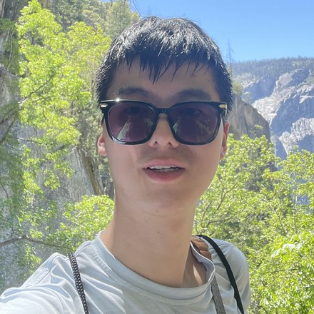

Publications

SIGMAN: Scaling 3D Human Gaussian Generation with Millions of Assets
ICCV 2025

I am a PhD student in Computer Science at the University of North Carolina at Chapel Hill, advised by Jason Ren.
Previously, I received my Master's degree from Carnegie Mellon University, where I worked with Youngjoong Kwon and Fernando De la Torre. Before that, I earned my Bachelor's degree in Computer Science (First Class Honours) from the University of Liverpool.
My current research focuses on synthesizing human interactions with articulated objects and cross-embodiment motion retargeting.
